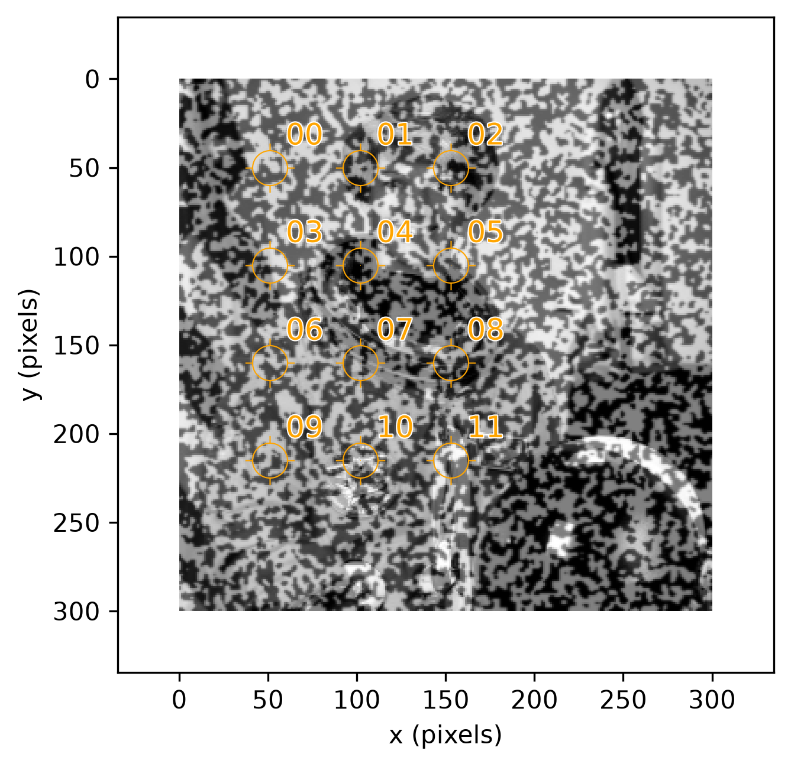
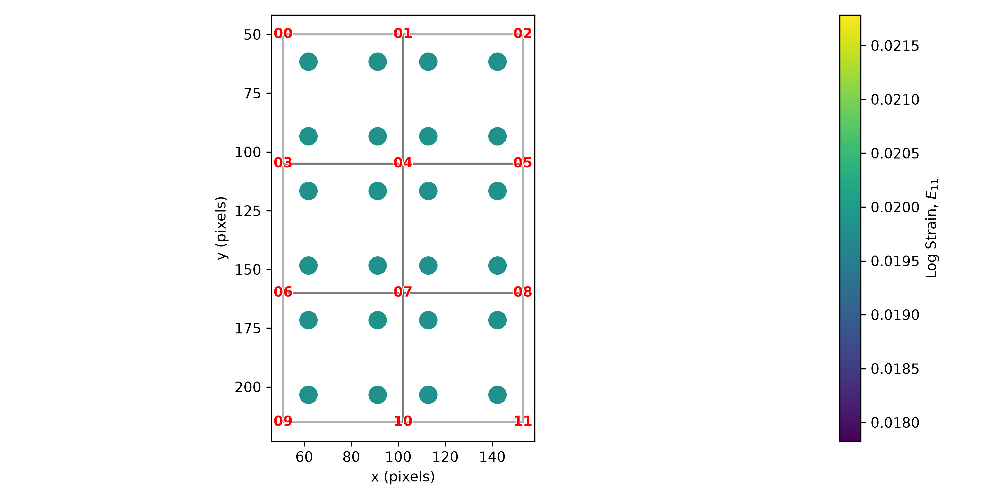
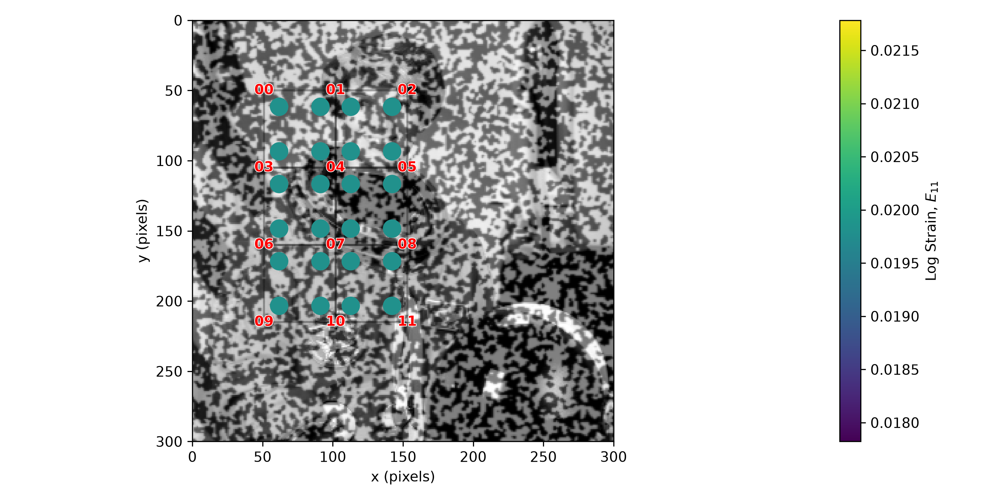
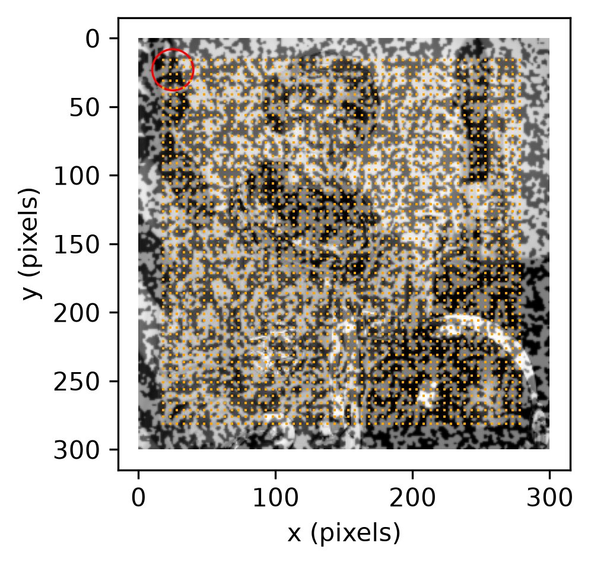
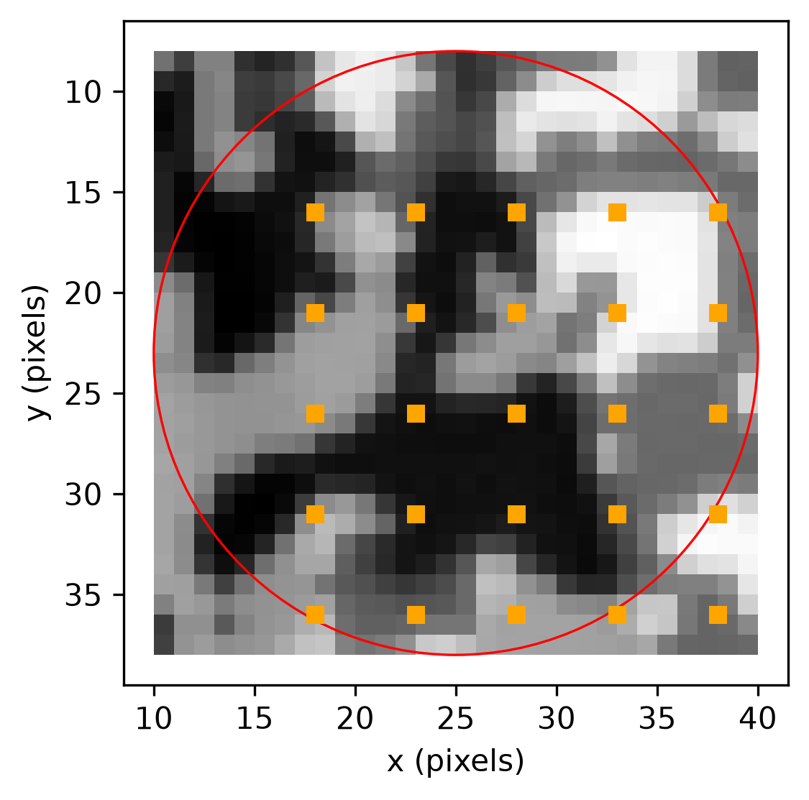
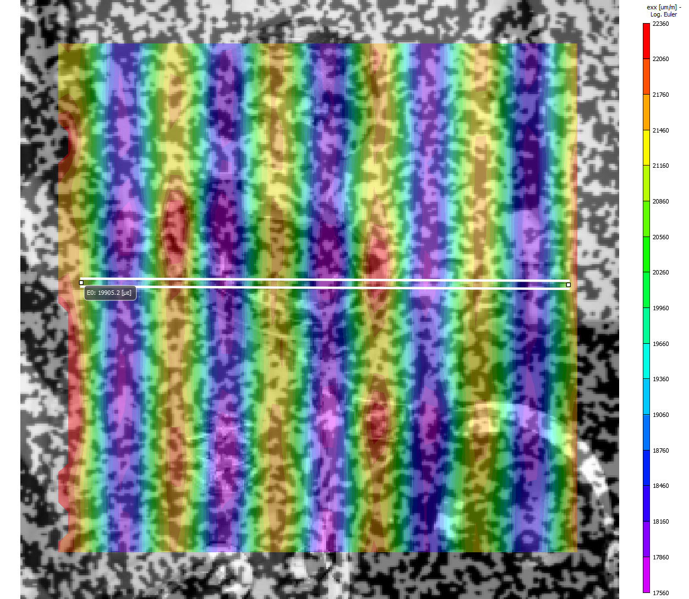
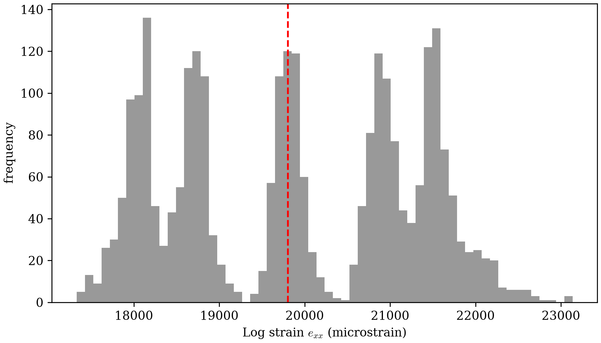
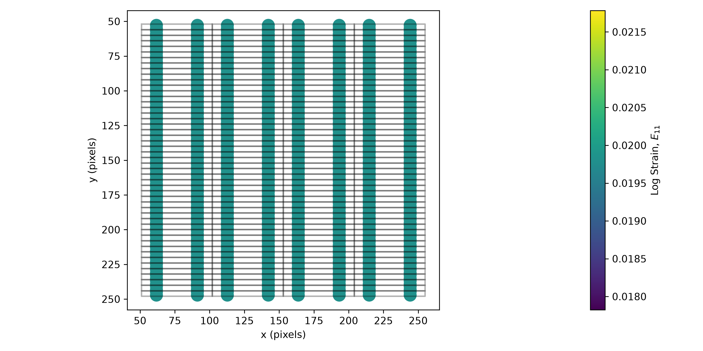
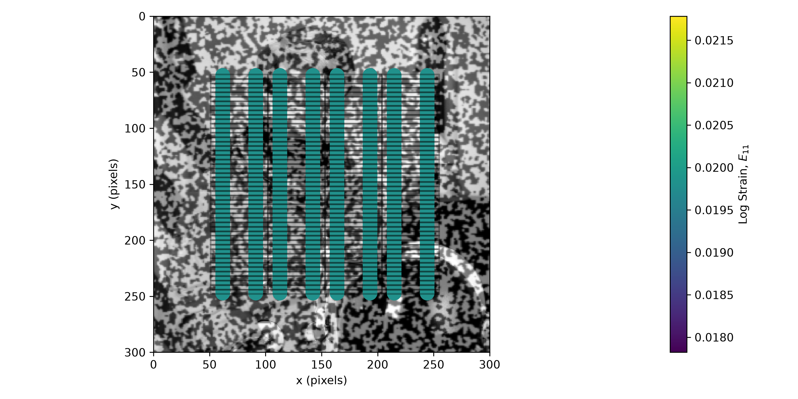

Simple Stretch
Multi-Point Motion tracked a grid of points under rigid-body translation — every point moves by the same , so Single Point Motion's known-integer-pixel trick (choosing so the ground truth is exact, not a sub-pixel estimate) carried over for free. A stretch is the next step up in complexity: a genuine deformation, not just a rigid shift, where different points move by different amounts. Getting the same exact-integer ground truth here takes more care.
dictk.image.stretch applies a uniaxial
or biaxial stretch pivoting at the image's origin : a point at moves to . Fixing
isolates the stretch to alone, so every point's
stays exactly as-is — the only question is which
values keep every point's new an integer too, rather than landing
between pixels.
Choosing an Integer-Safe Stretch Factor
Point Grid's 12 points span only three distinct values: 50, 100, and 150. Writing the stretch as a percentage , , and the new is:
For , this is just — always an integer, for any integer . But and both carry a factor of once divided by 100, so itself must be even for those points to land on an integer — which means must be even. Odd percentages (1%, 3%, 5%, ...) always leave and on a half-pixel.
That parity argument is exact in real-number math, but factor_x is a
64-bit float at runtime, and not every value that's mathematically an
integer survives that arithmetic unscathed — 1.1, for example, has no exact
binary floating-point representation, so 50 * 1.1 doesn't land on exactly
55.0 even though the true product is. Checking every even percentage
directly against dictk's actual points, rather than trusting the parity
argument alone:
from dictk.image import PixelCoordinate
from dictk.grid import generate
points = generate(
origin=PixelCoordinate(x=50, y=50),
count_x=3,
count_y=4,
spacing_x=50,
spacing_y=55,
)
xs = sorted({point.x for point in points})
for p in range(1, 21):
factor = (100 + p) / 100
exact = all((x * factor).is_integer() for x in xs)
print(f"{p:2d}% factor={factor!r} all-integer={exact}")
1% factor=1.01 all-integer=False
2% factor=1.02 all-integer=True
3% factor=1.03 all-integer=False
4% factor=1.04 all-integer=True
5% factor=1.05 all-integer=False
6% factor=1.06 all-integer=True
7% factor=1.07 all-integer=False
8% factor=1.08 all-integer=True
9% factor=1.09 all-integer=False
10% factor=1.1 all-integer=False
11% factor=1.11 all-integer=False
12% factor=1.12 all-integer=False
13% factor=1.13 all-integer=False
14% factor=1.14 all-integer=False
15% factor=1.15 all-integer=False
16% factor=1.16 all-integer=False
17% factor=1.17 all-integer=False
18% factor=1.18 all-integer=True
19% factor=1.19 all-integer=False
20% factor=1.2 all-integer=True
The parity argument is necessary but not sufficient: every odd percentage
fails as predicted, but so do several even ones (10%, 12%, 14%, 16%) purely
from floating-point representation error, not the underlying math. Of the
percentages that survive both checks, 2% is the smallest — the least
aggressive stretch that still keeps every point's ground-truth position an
exact pixel, with factor_x = 1.02 giving new values of 51, 102, and
153.
Applying the Stretch
Reuse points and reference_image from Point
Grid.
dictk.image.stretch builds current_image:
from dictk.image import read, stretch, PixelCoordinate
reference_image = read(path="astronaut0.png")
factor_x = 1.02
current_image = stretch(arr=reference_image, factor_x=factor_x)
factor_y defaults to 1.0. Every point's stays fixed. Only
changes, and by a different amount for each point:
expected = [
PixelCoordinate(x=int(point.x * factor_x), y=point.y)
for point in points
]
| Point | Reference Configuration | Expected | ||
|---|---|---|---|---|
| (pixels) | (pixels) | (pixels) | (pixels) | |
| 00 | 50 | 50 | 51 | 50 |
| 01 | 100 | 50 | 102 | 50 |
| 02 | 150 | 50 | 153 | 50 |
| 03 | 50 | 105 | 51 | 105 |
| 04 | 100 | 105 | 102 | 105 |
| 05 | 150 | 105 | 153 | 105 |
| 06 | 50 | 160 | 51 | 160 |
| 07 | 100 | 160 | 102 | 160 |
| 08 | 150 | 160 | 153 | 160 |
| 09 | 50 | 215 | 51 | 215 |
| 10 | 100 | 215 | 102 | 215 |
| 11 | 150 | 215 | 153 | 215 |
This is a real deformation, not a rigid shift. Multi-Point Motion moved every point by the same . A stretch moves each point by a different amount. A point at moves 1 pixel. A point at moves 3 pixels. The grid spreads apart under the stretch. It does not translate as one block.
Locating the Stretched Grid
dictk.grid.locate tracks the stretched
grid the same way it tracked the translated one in Tracking the
Grid. Reuse the same kernel
and search-area margins:
from dictk.grid import locate
found = locate(
reference_image=reference_image,
current_image=current_image,
reference_points=points,
kernel_margin_width=20,
kernel_margin_height=20,
search_margin_width=48,
search_margin_height=52,
)
Point found expected match
00 51,50 51,50 True
01 102,50 102,50 True
02 153,50 153,50 True
03 51,105 51,105 True
04 102,105 102,105 True
05 153,105 153,105 True
06 51,160 51,160 True
07 102,160 102,160 True
08 153,160 153,160 True
09 51,215 51,215 True
10 102,215 102,215 True
11 153,215 153,215 True
from dictk.plot import point_grid_plot
point_grid_plot(
image=current_image,
points=found,
color="orange",
figsize=(6.4, 4.8),
path="simple_stretch_current.png",
)
Saved: simple_stretch_current.png

Every found position matches the expected stretched position exactly. The stretch introduces no sub-pixel error at these 12 points. Multi-Point Motion established this exact-integer guarantee for rigid translation. This page confirms it holds under a real deformation too.
Twelve points, twelve independent correlations, whether the underlying motion is a rigid shift or a stretch: Recoverable Displacement Range picks up from here.
Strain
Visualizing strain results is a combination of mathematical accuracy and visual clarity. One might want to plot the "raw" data at the Gauss points, since that is the location within the element where the FEA solver actually calculates strain, making it the most accurate. However, this manner of visualization causes jumps (discontinuities) at element boundaries.
The professional standard is to calculate strain at the Gauss points, extrapolate the results to the nodes, and then report the nodal average from all adjacent elements to create a smooth contour plot.
For now, let's report the strain at the Gauss points.
12-Point Sample
dictk.grid.elements turns the
tracked grid's 12 points into 6 Q4 elements, then
dictk.element.gauss_point_log_strains
and
dictk.element.gauss_point_coordinates
compute each element's 4 Gauss points' logarithmic (Hencky) strain and
their own global position, in the current (found) configuration.
Logarithmic strain, matching the Verification Against
VIC-2D section below, which reports
VIC-2D's own logarithmic/Euler strain:
from dictk.element import gauss_point_coordinates, gauss_point_log_strains
from dictk.grid import elements
from dictk.plot import element_strain_plot
element_indices = elements(count_x=3, count_y=4)
values = []
coordinates = []
for element in element_indices:
reference_corners = [points[i] for i in element]
current_corners = [found[i] for i in element]
strains = gauss_point_log_strains(
reference_points=reference_corners, current_points=current_corners
)
values.extend(strain[0, 0] for strain in strains)
coordinates.extend(gauss_point_coordinates(points=current_corners))
element_strain_plot(
points=found,
elements=element_indices,
coordinates=coordinates,
values=values,
label=r"Log Strain, $E_{11}$",
show_node_numbers=True,
path="simple_stretch_strain_gauss_points.png",
)
element_strain_plot(
points=found,
elements=element_indices,
coordinates=coordinates,
values=values,
label=r"Log Strain, $E_{11}$",
image=current_image,
show_node_numbers=True,
path="simple_stretch_strain_on_current.png",
)


current_image.Strain Component: E11
----------------------------------------
Element 0 | GP (xi=-0.577, eta=-0.577) | E11: 1.980263e-02
Element 0 | GP (xi=+0.577, eta=-0.577) | E11: 1.980263e-02
Element 0 | GP (xi=+0.577, eta=+0.577) | E11: 1.980263e-02
Element 0 | GP (xi=-0.577, eta=+0.577) | E11: 1.980263e-02
Element 1 | GP (xi=-0.577, eta=-0.577) | E11: 1.980263e-02
Element 1 | GP (xi=+0.577, eta=-0.577) | E11: 1.980263e-02
Element 1 | GP (xi=+0.577, eta=+0.577) | E11: 1.980263e-02
Element 1 | GP (xi=-0.577, eta=+0.577) | E11: 1.980263e-02
Element 2 | GP (xi=-0.577, eta=-0.577) | E11: 1.980263e-02
Element 2 | GP (xi=+0.577, eta=-0.577) | E11: 1.980263e-02
Element 2 | GP (xi=+0.577, eta=+0.577) | E11: 1.980263e-02
Element 2 | GP (xi=-0.577, eta=+0.577) | E11: 1.980263e-02
Element 3 | GP (xi=-0.577, eta=-0.577) | E11: 1.980263e-02
Element 3 | GP (xi=+0.577, eta=-0.577) | E11: 1.980263e-02
Element 3 | GP (xi=+0.577, eta=+0.577) | E11: 1.980263e-02
Element 3 | GP (xi=-0.577, eta=+0.577) | E11: 1.980263e-02
Element 4 | GP (xi=-0.577, eta=-0.577) | E11: 1.980263e-02
Element 4 | GP (xi=+0.577, eta=-0.577) | E11: 1.980263e-02
Element 4 | GP (xi=+0.577, eta=+0.577) | E11: 1.980263e-02
Element 4 | GP (xi=-0.577, eta=+0.577) | E11: 1.980263e-02
Element 5 | GP (xi=-0.577, eta=-0.577) | E11: 1.980263e-02
Element 5 | GP (xi=+0.577, eta=-0.577) | E11: 1.980263e-02
Element 5 | GP (xi=+0.577, eta=+0.577) | E11: 1.980263e-02
Element 5 | GP (xi=-0.577, eta=+0.577) | E11: 1.980263e-02
----------------------------------------
All 24 Gauss points report the identical value,
— expected here, since factor_x = 1.02 is a uniform, axis-aligned
stretch, a globally affine map that Q4's bilinear interpolation
reproduces exactly everywhere, not just at element corners. In the
general case, where the deformation isn't perfectly uniform, each Gauss
point's strain would differ.
Data Download
Every image this page used is downloadable below, as a TIFF. Download files individually, or all at once: one compressed zip file bundles every full image (reference and current), every kernel, and every search area.
import zipfile
import imageio.v3 as iio
images = {"astronaut0.tiff": reference_image, "astronaut2.tiff": current_image}
for i, point in enumerate(points):
origin = PixelCoordinate(x=point.x - kernel_margin, y=point.y - kernel_margin)
images[f"kernel_{i:02d}.tiff"] = subimage(
image=reference_image, origin=origin, width=2 * kernel_margin, height=2 * kernel_margin
)
for i, point in enumerate(points):
origin = PixelCoordinate(x=point.x - search_margin_width, y=point.y - search_margin_height)
images[f"search_area_stretch_{i:02d}.tiff"] = subimage(
image=current_image, origin=origin, width=2 * search_margin_width, height=2 * search_margin_height
)
with zipfile.ZipFile("simple_stretch_data.zip", "w", zipfile.ZIP_DEFLATED) as zf:
for name, arr in images.items():
zf.writestr(name, iio.imwrite("<bytes>", arr, extension=".tiff"))
Download all: simple_stretch_data.zip (26 files, 299 KB)
Full Images
astronaut0.tiff is reference_image — identical to Multi-Point
Motion's copy, since both pages
reuse the same reference image. astronaut2.tiff is current_image,
stretched by factor_x=1.02 — named astronaut2, not astronaut1, to
stay distinct from Multi-Point Motion's translated current image,
which is a different file with different content:
from dictk.image import write
write(arr=reference_image, path="astronaut0.tiff")
write(arr=current_image, path="astronaut2.tiff")
| File | Description |
|---|---|
| astronaut0.tiff | Reference image, 300x300 pixels (same as Multi-Point Motion) |
| astronaut2.tiff | Current image, stretched by factor_x=1.02 |
Kernels
Kernels are unchanged from Multi-Point
Motion: the stretch only ever moves
current_image, and a kernel always comes from reference_image.
Regenerated here, byte-for-byte identical, for a self-contained download
set:
from dictk.image import subimage, write
kernel_margin = 20
for i, point in enumerate(points):
origin = PixelCoordinate(x=point.x - kernel_margin, y=point.y - kernel_margin)
kernel = subimage(image=reference_image, origin=origin, width=2 * kernel_margin, height=2 * kernel_margin)
write(arr=kernel, path=f"kernel_{i:02d}.tiff")
| File | Point | Origin (pixels) |
|---|---|---|
| kernel_00.tiff | 00 | (30, 30) |
| kernel_01.tiff | 01 | (80, 30) |
| kernel_02.tiff | 02 | (130, 30) |
| kernel_03.tiff | 03 | (30, 85) |
| kernel_04.tiff | 04 | (80, 85) |
| kernel_05.tiff | 05 | (130, 85) |
| kernel_06.tiff | 06 | (30, 140) |
| kernel_07.tiff | 07 | (80, 140) |
| kernel_08.tiff | 08 | (130, 140) |
| kernel_09.tiff | 09 | (30, 195) |
| kernel_10.tiff | 10 | (80, 195) |
| kernel_11.tiff | 11 | (130, 195) |
Search Areas
Search areas, unlike kernels, are different from Multi-Point Motion's:
they come from this page's current_image — the stretched one, not the
translated one. Named search_area_stretch_* to keep the two sets of
files distinct, still centered on each point's reference position:
search_margin_width, search_margin_height = 48, 52
for i, point in enumerate(points):
origin = PixelCoordinate(x=point.x - search_margin_width, y=point.y - search_margin_height)
search_area = subimage(image=current_image, origin=origin, width=2 * search_margin_width, height=2 * search_margin_height)
write(arr=search_area, path=f"search_area_stretch_{i:02d}.tiff")
| File | Point | Origin (pixels) |
|---|---|---|
| search_area_stretch_00.tiff | 00 | (2, -2) |
| search_area_stretch_01.tiff | 01 | (52, -2) |
| search_area_stretch_02.tiff | 02 | (102, -2) |
| search_area_stretch_03.tiff | 03 | (2, 53) |
| search_area_stretch_04.tiff | 04 | (52, 53) |
| search_area_stretch_05.tiff | 05 | (102, 53) |
| search_area_stretch_06.tiff | 06 | (2, 108) |
| search_area_stretch_07.tiff | 07 | (52, 108) |
| search_area_stretch_08.tiff | 08 | (102, 108) |
| search_area_stretch_09.tiff | 09 | (2, 163) |
| search_area_stretch_10.tiff | 10 | (52, 163) |
| search_area_stretch_11.tiff | 11 | (102, 163) |
Verification Against VIC-2D
Path Forward names a direction worth
pursuing: running this book's own synthetic datasets through established
DIC software, and comparing directly against dictk's own results. This
page's own factor_x = 1.02 stretch was run through
VIC-2D (Correlated
Solutions, Inc.), independently of dictk.
2682-Point Sample
VIC-2D placed its own subsets on a regular grid, 5 pixels apart in both directions — 53x54, 2862 candidate positions across the image. 180 of them sit close enough to the image's outer edge that their own correlation window would run off-canvas, so VIC-2D masks those out, leaving 2682 valid subsets.
from dictk.image import read, PixelCoordinate
from dictk.grid import generate
from dictk.plot import point_grid_plot
reference_image = read(path="astronaut0.png")
points = generate(
origin=PixelCoordinate(x=18, y=16), count_x=53, count_y=54, spacing_x=5, spacing_y=5
)
# Marks exactly the region the zoomed-in figure below crops to -- same
# center and radius drawn there too, where it exactly touches all four
# edges of that figure's own extent.
crop_origin = PixelCoordinate(x=10, y=8)
crop_width, crop_height = 30, 30
circle_center = PixelCoordinate(
x=crop_origin.x + crop_width // 2, y=crop_origin.y + crop_height // 2
)
circle_radius = crop_width / 2
point_grid_plot(
image=reference_image,
points=points,
color="orange",
show_node_numbers=False,
dot_size=0.8,
circle_center=circle_center,
circle_radius=circle_radius,
circle_linewidth=0.8,
path="simple_stretch_2862_overview.png",
)
Saved: simple_stretch_2862_overview.png

A zoomed-in corner shows the same 5px grid at true scale, the same red circle now exactly touching all four edges of the crop:
from dictk.image import read, PixelCoordinate, subimage
from dictk.grid import generate
from dictk.plot import point_grid_plot
reference_image = read(path="astronaut0.png")
points = generate(
origin=PixelCoordinate(x=18, y=16), count_x=53, count_y=54, spacing_x=5, spacing_y=5
)
crop_origin = PixelCoordinate(x=10, y=8)
crop_width, crop_height = 30, 30
circle_center = PixelCoordinate(
x=crop_origin.x + crop_width // 2, y=crop_origin.y + crop_height // 2
)
circle_radius = crop_width / 2
cropped = subimage(
image=reference_image, origin=crop_origin, width=crop_width, height=crop_height
)
# points stays in the full image's own frame -- origin=crop_origin tells
# point_grid_plot where cropped sits within it, so the saved figure's
# axes read astronaut0's own pixel numbers, not the crop's local 0-based
# ones. The same point (and the same circle) reads identically here and
# in the overview above.
sample_points = [
p
for p in points
if crop_origin.x <= p.x < crop_origin.x + crop_width
and crop_origin.y <= p.y < crop_origin.y + crop_height
]
point_grid_plot(
image=cropped,
points=sample_points,
origin=crop_origin,
color="orange",
show_node_numbers=False,
dot_size=6,
circle_center=circle_center,
circle_radius=circle_radius,
circle_linewidth=0.8,
figsize=(4, 4),
path="simple_stretch_2862_zoom.png",
)
Saved: simple_stretch_2862_zoom.png

astronaut0's own pixel coordinates, not the crop's local 0-based ones, so a point here reads identically in the overview above -- e.g. the top-left point is (18, 16) in both figures. The same red circle marked in the overview above appears here too, now exactly touching all four edges of this figure's own extent -- the same visual correspondence Correlation Visualization's Solution Vicinity panel uses.VIC-2D reports logarithmic (Euler) strain, so it's compared here
against the Strain section above's own dictk-computed log
strain. Across those 2682 valid subsets, averages
19875.8 microstrain — close to, but noisier than,
Multi-Point Motion's
displacement match, since strain is a spatial derivative of already-noisy
per-point displacement data, not a directly measured quantity:

factor_x = 1.02 stretch (click to enlarge). The horizontal line is VIC-2D's own extensometer annotation, reading 19905.2 microstrain along that path.The full distribution, not just its mean, shows how noisy those 2682 subsets really are:
import csv
import numpy as np
import matplotlib.pyplot as plt
with open("../verification/simple_stretch_vic_out.csv") as f:
rows = [{k.strip(' "'): v for k, v in row.items()} for row in csv.DictReader(f)]
exx = np.array([float(r["exx"]) * 1e6 for r in rows if float(r["sigma"]) != -1])
analytical = np.log(1.02) * 1e6
plt.rcParams.update({"font.family": "serif", "mathtext.fontset": "cm"})
fig, ax = plt.subplots(figsize=(7, 4), constrained_layout=True)
ax.hist(exx, bins=60, color="gray", alpha=0.8)
ax.axvline(analytical, color="red", linestyle="--", linewidth=1.5)
ax.set_xlabel(r"Log strain $e_{xx}$ (microstrain)")
ax.set_ylabel("frequency")
fig.savefig("simple_stretch_vic_exx_histogram.png", dpi=300)
Saved: simple_stretch_vic_exx_histogram.png

Three values agree closely: VIC-2D's own measured mean, 19875.8
microstrain; dictk's own computed from the Strain section
above, 19803.0 microstrain (identical at all 24 Gauss points, since
this page's stretch is exact and uniform); and the analytical
logarithmic (true/Euler) strain a factor_x = 1.02 stretch implies,
microstrain.
dictk's own value lands within 0.02% of the analytical one — it's
derived from the exact-integer tracked positions established earlier
on this page, not a separately measured quantity, so it agrees almost
exactly. VIC-2D's own mean, measured from real correlated subsets
rather than exact tracked points, lands within 0.4% of the same
analytical value.
The full, subset-by-subset VIC-2D output —
simple_stretch_vic_out.csv
— is available for closer inspection: every subset's position,
displacement, strain, and correlation quality metrics, not just the
summary field shown above.
VIC-2D sampled this deformation at far higher density than dictk
has tried. Simple Stretch Revisited takes
that cue next, pushing dictk's own tracked grid past twelve points
for the first time.
Simple Stretch Revisited
Every point tracked so far on this page has landed on an exact integer pixel in the deformed configuration. That only works because of how the 12-point grid's own values were chosen. is . A point's stretched only comes out as a whole number when itself is a multiple of 50 — , exactly, but , not exactly. The grid's three distinct values, 50, 100, and 150, are all multiples of 50. That's not a coincidence — it's the same integer-safety check Choosing an Integer-Safe Stretch Factor already ran, just not stated in exactly these terms yet.
A much denser grid doesn't automatically keep that property. Spacing points 5 pixels apart, matching VIC-2D's own subset grid, mostly lands on values that aren't multiples of 50 — most of those points' true stretched position isn't an integer at all, so nothing can land on it exactly, no matter how the tracking works.
250-Point Sample
has no such restriction — every stays fixed,
so spacing is free. That leaves one real lever: keep restricted
to multiples of 50, and pack the direction as densely as space
allows. Within this image, — 5
values, still 50 pixels apart, and (with search_margin_width=48) all
comfortably clear of the image's own edges. A much larger, still fully
integer-safe grid follows directly:
from dictk.grid import generate
points = generate(
origin=PixelCoordinate(x=50, y=52),
count_x=5,
count_y=50,
spacing_x=50,
spacing_y=4,
)
250 points, x values: [50, 100, 150, 200, 250], y range: 52-248
Tracked the same way as every other grid on this page:
from dictk.grid import locate
found = locate(
reference_image=reference_image,
current_image=current_image,
reference_points=points,
kernel_margin_width=20,
kernel_margin_height=20,
search_margin_width=48,
search_margin_height=52,
)
250/250 points land on their expected integer pixel exactly
Every one of them lands exactly, the same as the 12-point grid — this grid is 20x larger, entirely by choosing values that stay integer-safe, not by luck.
Strain follows the same recipe as the Strain section above:
dictk.grid.elements for
connectivity, then
dictk.element.gauss_point_log_strains
and
dictk.element.gauss_point_coordinates
at each of the resulting 196 elements' Gauss points. Node numbers are
left off this time — 250 labels would be clutter, not information, at
this density:
from dictk.element import gauss_point_coordinates, gauss_point_log_strains
from dictk.grid import elements
from dictk.plot import element_strain_plot
element_indices = elements(count_x=5, count_y=50)
values = []
coordinates = []
for element in element_indices:
reference_corners = [points[i] for i in element]
current_corners = [found[i] for i in element]
strains = gauss_point_log_strains(
reference_points=reference_corners, current_points=current_corners
)
values.extend(strain[0, 0] for strain in strains)
coordinates.extend(gauss_point_coordinates(points=current_corners))
element_strain_plot(
points=found,
elements=element_indices,
coordinates=coordinates,
values=values,
label=r"Log Strain, $E_{11}$",
path="simple_stretch_revisited_strain_gauss_points.png",
)
element_strain_plot(
points=found,
elements=element_indices,
coordinates=coordinates,
values=values,
label=r"Log Strain, $E_{11}$",
image=current_image,
path="simple_stretch_revisited_strain_on_current.png",
)


current_image.is still exactly at all 784 Gauss points — a uniform stretch is still a uniform stretch, regardless of how finely it's sampled. What's new here isn't the number, it's that the method now scales cleanly to a grid closer to VIC-2D's own density, with no tracking failures anywhere in it.
Point count was the free variable throughout this section — 250 here,
chosen for exactness, not for speed. How dictk's own tracking time
scales as point count grows much larger, and how that scaling compares
across sequential, threaded, and multi-process execution, is
Parallelization's own question, not this one.
Two things this section deliberately leaves open. Every point here still has to land on an exact integer pixel — real displacements won't. Recovering those is Subpixel Accuracy's own job, not this section's — it picks up exactly this constraint, using this same scenario. And the timing question just raised — how tracking time actually scales once point count grows past 250 — is Parallelization's to answer, not this page's.